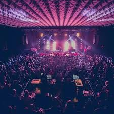

Experience Charleston's fastest-growing entertainment hub with waterfront venues and premier party services
Mount Pleasant, South Carolina stands as the Charleston area's largest and fastest-growing suburb, offering a dynamic entertainment landscape that combines waterfront dining, modern nightlife venues, and comprehensive event infrastructure serving both residents and the thousands of visitors who choose this town as their Charleston area base. This prosperous community has evolved beyond its bedroom suburb origins to develop its own entertainment identity, featuring contemporary bars, live music venues, and upscale restaurants along the waterfront that rival downtown Charleston's offerings while providing the convenience, parking accessibility, and family-friendly atmosphere that define Mount Pleasant's appeal. For celebration groups staying in Mount Pleasant's numerous hotels and vacation properties, Mount Pleasant private party entertainment connects organizers with local professionals who understand the town's unique blend of suburban comfort and sophisticated entertainment expectations, making them the trusted choice for hotel suite parties, vacation rental celebrations, and bachelorette groups seeking quality entertainment without navigating downtown Charleston's complexity.
The entertainment infrastructure in Mount Pleasant reflects the town's rapid growth and affluent demographics, where newly developed waterfront districts, established neighborhood commercial areas, and proximity to beach destinations create diverse options for celebration seekers. Local entertainers serving Mount Pleasant bring specialized knowledge of the town's hotel concentration, vacation rental opportunities in nearby beach communities, and the professional expectations of an educated, well-traveled population, ensuring private parties meet the quality standards that Mount Pleasant residents and visitors have come to expect from their entertainment experiences.
The main artery through Mount Pleasant features the highest concentration of entertainment venues, waterfront restaurants, and nightlife establishments that define the town's social scene. This corridor connects Old Village charm with modern developments, creating a continuous entertainment experience from the bridge approaches to Shem Creek.
This iconic entertainment district centers around the working waterfront where seafood restaurants, bars, and live music venues create Charleston's most distinctive dining and nightlife destination outside downtown. The boardwalk atmosphere, sunset views, and concentration of quality establishments make Shem Creek essential to Mount Pleasant's entertainment identity and appeal to celebration groups.
The historic Old Village area provides a more intimate entertainment experience with upscale restaurants, wine bars, and the Pitt Street Bridge offering scenic waterfront access. This neighborhood attracts groups seeking sophisticated dining and drinks in a charming historic setting that contrasts with the more energetic Shem Creek scene.
These modern mixed-use developments offer contemporary dining, shopping, and entertainment venues serving Mount Pleasant's growing residential population. The Town Centre provides chain restaurants and familiar entertainment options, while Park West's amenities support the massive residential community that has made Mount Pleasant the region's population leader.
The concentration of hotels along Highway 17 creates a distinct entertainment ecosystem where visitor-focused services thrive. This area attracts celebration groups seeking convenient accommodation with easy access to both Mount Pleasant venues and the beaches, making it strategic for bachelorette parties and group events exploring multiple destinations.
Mount Pleasant's proximity to downtown means groups easily combine local entertainment with exploring Charleston nightlife across the bridge, creating comprehensive celebration itineraries.
Mount Pleasant's emergence as a major entertainment destination reflects its successful evolution from Charleston bedroom community to independent destination offering comprehensive visitor experiences. The town attracts entertainment seekers who appreciate modern amenities, waterfront atmosphere, and the practical advantages of staying outside downtown while maintaining access to the entire Charleston area entertainment ecosystem.
Shem Creek and other waterfront venues provide the scenic Charleston experience—sunset views, water access, seafood dining—without downtown's parking challenges, traffic congestion, or tourist crowds. Entertainment seekers enjoy comparable quality venues with significantly better accessibility, making spontaneous entertainment decisions easier than downtown requires.
The concentration of hotels along Highway 17 and throughout Mount Pleasant provides celebration groups with accommodation options downtown Charleston cannot match. From budget-friendly chains to upscale properties, the variety ensures groups find suitable lodging at various price points while maintaining proximity to entertainment districts and beach access.
Mount Pleasant's position makes it the natural base camp for groups wanting to explore the entire Charleston area. Downtown Charleston sits just across the bridge, Isle of Palms and Sullivan's Island are 15 minutes away, and even Folly Beach remains accessible. This central position maximizes itinerary flexibility for celebration weekends incorporating multiple destinations.
Unlike historic Charleston's charm-versus-functionality tradeoffs, Mount Pleasant offers modern infrastructure—ample parking, contemporary venues, efficient traffic flow during most hours, and commercial amenities that make logistics easier. Entertainment seekers appreciate being able to park easily, access venues without navigating one-way streets, and find late-night convenience stores when needed.
Mount Pleasant's reputation as a safe, affluent family community extends benefits to celebration groups who appreciate the town's low crime rates, well-lit public areas, and professional public safety services. This security environment allows bachelorette parties and group celebrations to enjoy entertainment without the heightened awareness sometimes necessary in urban environments.
The town's affluent demographics have attracted quality restaurants, bars, and entertainment venues that rival downtown offerings. Groups discover they don't need to venture into Charleston for excellent dining or nightlife—Mount Pleasant increasingly provides comprehensive entertainment experiences within its own boundaries.
Celebration groups often discover that zealous-forest-0782c0a10.1.azurestaticapps.net provides valuable resources for planning Mount Pleasant entertainment experiences, and working with most rated Charleston dancers who serve Mount Pleasant ensures professional quality matching the town's upscale expectations.
Mount Pleasant has rapidly emerged as a strategic bachelorette party destination for groups seeking Charleston area experiences with the practical advantages of suburban infrastructure and waterfront entertainment. The town's combination of hotel availability, modern venues, and gateway location creates ideal conditions for celebration groups who want comprehensive Charleston area access without committing exclusively to downtown or beach locations.
The abundance of hotels throughout Mount Pleasant makes it perfect for bachelorette parties preferring hotel accommodations over vacation rentals. Groups can book blocks of rooms, utilize hotel amenities like pools and breakfast service, and host private entertainment in suites without the responsibilities of managing entire rental properties.
Shem Creek's restaurant and bar concentration provides bachelorette-friendly venues where groups can enjoy waterfront dining, drinks with sunset views, and bar-hopping without vehicles since establishments cluster within walking distance. The boardwalk atmosphere creates natural photo opportunities and social energy that enhance celebration experiences.
Bachelorette parties rarely want identical daily itineraries. Mount Pleasant's location allows groups to structure diverse schedules—beach days at Isle of Palms, shopping and lunch in Mount Pleasant, evening entertainment downtown Charleston—without requiring accommodation changes or lengthy commutes that waste valuable celebration time.
Unlike downtown Charleston where parking creates constant challenges, Mount Pleasant venues typically offer ample parking that simplifies logistics for groups using rideshare services or designated drivers. This convenience reduces stress points that often complicate bachelorette party planning in more congested areas.
Mount Pleasant's newer development means venues feature modern amenities—updated restrooms, efficient service systems, contemporary decor—that create comfortable experiences. Bachelorette groups appreciate venues designed with 21st-century expectations rather than historic buildings adapted for modern use.
Entertainment, dining, and accommodation costs in Mount Pleasant typically run lower than comparable downtown Charleston options while maintaining quality standards. This value proposition allows bachelorette parties to allocate budgets toward experiences and activities rather than just basic expenses, enhancing overall celebration quality.
Hotels throughout Mount Pleasant accommodate private party entertainment in suites, understanding that celebration groups represent significant business. Property managers generally work with groups hosting private entertainment, particularly when events remain contained within guest rooms and don't disturb other guests.
The well-lit, modern commercial districts where Mount Pleasant entertainment concentrates create safe environments for bachelorette groups navigating evening venues. The suburban setting means less concern about walking between establishments or waiting for rideshare pickups compared to more urban entertainment districts.
Hosting private parties in Mount Pleasant hotels and vacation properties requires entertainment services that understand both the town's suburban character and the professional standards expected by its affluent, educated population. Local professional entertainers bring expertise that enhances celebration experiences while navigating the practical considerations of working within hotel environments and residential neighborhoods that define Mount Pleasant's accommodation landscape.
Experienced Mount Pleasant entertainers understand how to work professionally within hotel settings—coordinating with property staff, managing noise levels appropriate for shared-wall environments, and conducting entertainment that respects hotel policies while ensuring guests enjoy themselves. This hotel-specific expertise prevents issues that could result in complaints or premature event termination.
Mount Pleasant's demographics skew toward educated professionals with sophisticated entertainment experiences. Local entertainers familiar with this population understand the quality expectations, appropriate entertainment approaches, and professional presentation standards that ensure positive reception from groups accustomed to high-quality service experiences.
Mount Pleasant entertainment happens in diverse settings—hotel suites, vacation rental homes in nearby beach communities, private residences hosting celebrations. Professional entertainers working regularly in Mount Pleasant adapt smoothly across these environments, understanding the specific considerations each venue type presents.
Local entertainers understand Mount Pleasant's layout, traffic patterns during different times and seasons, and efficient routes between the town's various districts. This knowledge ensures punctual arrival despite potential delays on Highway 17 or the connector bridges, demonstrating the reliability that professional celebrations require.
Entertainers working Mount Pleasant typically serve the broader Charleston area, meaning they maintain professional relationships spanning all local entertainment districts. This connectivity proves valuable when groups want recommendations for venues, restaurants, or activities across the Charleston area based on current, authentic local knowledge.
Mount Pleasant celebrations often include diverse participants—from young professionals to family members, locals to visitors. Professional entertainers understand how to read room dynamics and calibrate energy levels appropriately, ensuring entertainment enhances celebrations without creating uncomfortable situations for participants with varying expectations.
Working in hotels and upscale environments requires discretion beyond basic professionalism. Established Mount Pleasant entertainers understand privacy expectations, maintain appropriate boundaries with clientele, and handle situations with maturity that protects both guests and their own professional reputations within the town's service community.
While Mount Pleasant attracts affluent residents and visitors, the market also includes budget-conscious celebration groups choosing the town for its value proposition. Professional entertainers balance quality service with reasonable pricing structures that reflect Mount Pleasant's position as an accessible alternative to premium downtown or beach destination pricing.
The combination of modern infrastructure, waterfront entertainment, strategic location, and professional local entertainment services establishes Mount Pleasant as a comprehensive celebration destination where groups discover that suburban convenience need not compromise entertainment quality or memorable experience creation.
Mount Pleasant represents the evolution of suburban communities into legitimate entertainment destinations, where waterfront charm meets modern convenience and professional entertainers transform hotel suites and vacation properties into celebration venues that capture the best of the Charleston area experience. The town's continued growth ensures its entertainment infrastructure will only expand, solidifying Mount Pleasant's position as an essential component of the Charleston area's comprehensive celebration landscape.